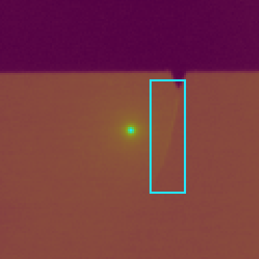
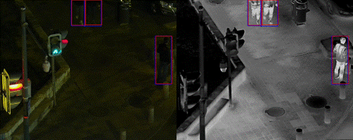

About
My name is Kevin Helvig. I'm a researcher working on AI and computer vision for robotics at ONERA. I explore the use of non-conventional imaging techniques such as thermal imaging. My PhD thesis was about the use of infrared flying-spot laser thermography coupled with deep learning to identify defects on metallic surfaces, exploring the development of deep learning based sensor-fusion neural models through cross-attention approaches.


Publications
[2021-2024] PhD work
-
[2024] -
Apprentissage multi-capteurs pour le contrôle non destructif de matériaux
K. Helvig
Thesis manuscript, Université Paris-Saclay -
[2024] -
CAFF-DINO: Multi-spectral Object Detection Transformers with Cross-attention Features Fusion
K. Helvig, B. Abeloos, P. Trouvé-Peloux
Proceedings of the IEEE/CVF Conference on Computer Vision and Pattern … -
[2024] -
Synthetic visible-IR images pairs generation for multi-spectral NDT using flying spot thermography and deep learning
K. Helvig, P. Trouvé-Peloux, L. Gaverina, JM. Roche, B. Abeloos
Thermosense: Thermal Infrared Applications XLVI 13047, 14-26 -
[2024] -
Database for transfer learning in crack detection and localization on metallic materials using flying spot thermography and deep learning
K. Helvig, P. Trouvé-Peloux, L. Gaverina, JM. Roche, B. Abeloos
Journal of Electronic Imaging 33 (3), 031202-031202 -
[2024] -
Détection de fissure sur matériaux métalliques par apprentissage profond et thermographie laser flying-spot: approche par apprentissage progressif
K. Helvig, P. Trouvé-Peloux, B. Abeloos, L. Gaverina, JM. Roche XXIXème Colloque Francophone de Traitement du Signal et des Images (GRETSI), 2023 -
[2023] -
Automated crack detection on metallic materials with flying-spot thermography using deep learning and progressive training
K. Helvig, P. Trouvé-Peloux, L. Gaverina, B. Abeloos, JM. Roche
Quantitative InfraRed Thermography Journal, 1-20 -
[2023] -
Laser flying-spot thermography: an open-access dataset for machine learning and deep learning
K. Helvig, P. Trouvé-Peloux, L. Gaverina, JM. Roche, C. Pradère
Sixteenth International Conference on Quality Control by Artificial Vision (QCAV), 2023 -
[2022] -
Towards deep learning fusion of flying spot thermography and visible inspection for surface cracks detection on metallic materials
K. Helvig, L. Gaverina, P. Trouvé-Peloux, JM. Roche, B. Abeloos, C. Pradère
The biannual Quantitative InfraRed Thermography (QIRT), 2022
Interests
In addition to my research, I enjoy using tools like Blender or Illustrator for creating infographics.
Contact
You can reach me by email at kevin.helvig@onera.fr.